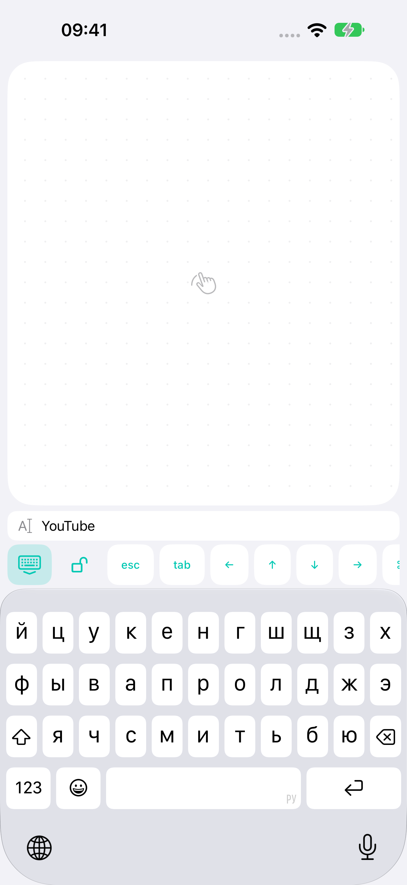

↖
Мышь, которая всегда рядом
Один палец двигает курсор, два прокручивают. Левый и правый клик, двойное нажатие и зажим кнопки для перемещения окон.
Двигай курсором, прокручивай и печатай с телефона. BridgeX соединяет iPhone или Android с компьютером. Сейчас поддерживается Mac; Windows в разработке.
Бесплатно · iOS 17+ / Android 12+ · macOS 14+ · Windows в разработке
01Bluetooth или домашний Wi-Fi
02Управление без интернета
03Без аккаунта и рекламы
С ДИВАНА. С КРОВАТИ. ИЗ КРЕСЛА.
Один палец двигает курсор, два прокручивают. Левый и правый клик, двойное нажатие и зажим кнопки для перемещения окон.
Клавиатура телефона со строкой набираемого текста над ней. Исправляй опечатки, сохраняя большой тачпад.
Прокрутка с инерцией, Mission Control, рабочие столы и щипок для масштаба в поддерживаемых приложениях.
Bluetooth LE работает без роутера. Дома можно выбрать Wi-Fi. Команды зашифрованы и не проходят через внешний сервер.

МАЛЕНЬКИЙ ЭКРАН. БОЛЬШЕ УДОБСТВА.
Откройте поиск на Mac и наберите запрос на телефоне. Проверяйте текст над клавиатурой, исправляйте и отправляйте Enter.
Кнопки вкладок, стрелки, Escape, Tab и сочетания копирования и вставки — в той же панели. Набираемый текст не сохраняется на диск.
Как устроена конфиденциальность ↗НАСТРОЙТЕ ОДИН РАЗ
Установите Mac-компаньон. Разрешите управление в системном разделе «Универсальный доступ».
Включите Bluetooth на обоих устройствах или подключите их к одной домашней сети.
Покажи QR-код BridgeX на компьютере, затем нажми «Подключить PC/Mac» на iPhone или Android. Сейчас поддерживается Mac; Windows в разработке.
ПЕРЕД ПОДКЛЮЧЕНИЕМ
Для управления — нет. Bluetooth работает напрямую, Wi-Fi — внутри домашней сети. Интернет понадобится для первоначальной загрузки приложений.
Бесплатный Mac-компаньон BridgeX. Он принимает команды телефона в вашей открытой сессии. Требуется macOS 14 или новее.
Mac должен быть включён, пользовательская сессия открыта, BridgeX запущен. Пробуждение и управление до входа в систему не поддерживаются.
Нет. Устройства связываются QR-кодом. Разработчик не получает набираемый текст и историю управления.
Да. Первая версия бесплатна, без встроенных покупок, подписки и рекламы.
BridgeX поддерживает прокрутку, щипок для масштаба и системные жесты через стандартные сочетания клавиш. Их действие зависит от приложения и настроек Mac. Непрерывное аппаратное масштабирование и Force Touch не эмулируются.
ИСТОРИЯ BRIDGEX
Android 0.1.14 (15)
iPhone/iPad 1.0.1 (20)
Mac · Apple silicon